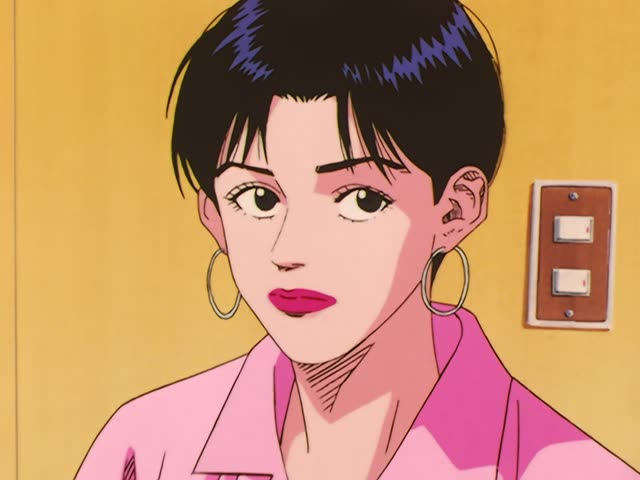

が (But)

YouTube · video
元々は、アパレル関係の仕事をしていましたが
"Originally, I worked in fashion, but... [now I make miniatures]"
が at the end of a sentence part means but. It goes after the whole sentence, usually after です or ます: していました + が = "I did, but...".
On this card, she's setting up a contrast: that was then, and something different is coming. You can even stop right after が and leave the rest unsaid.
が is the polite "but". With friends you'd say けど instead: していたけど.

Smoking · Episode 3
残念だが 諦めてくれ
"It's a shame, but give up on it."
が can follow a plain sentence too, but it sounds stiff, so most people say けど in casual talk. On this card, 残念だ ("it's a shame") + が + 諦めてくれ ("give up") sounds stern.
Quick Examples
A coworker asks how the new job is going.
忙しいですが、楽しいです。
"It's busy, but it's fun."
Sentence + が + sentence. The second half goes against what the first half makes you expect.
PoliteAt a shop, you ask for a size they don't have.
すみません、Mはありませんが、Lはあります。
"Sorry, we don't have M, but we have L."
ません + が works too. No M, but here's another option.
PoliteCalling a restaurant to ask about tonight.
今晩の予約をしたいんですが…
"I'd like to make a reservation for tonight, but... [is that possible?]"
Stopping at が makes a request soft. The other person fills in the rest.
PoliteWith and without
日本語は難しいです。好きです。
"Japanese is hard. I like it." Two separate facts, no link.
日本語は難しいですが、好きです。
"Japanese is hard, but I like it." Now the second part pushes back against the first.
Not the same as the subject marker が. That one comes right after a noun (猫がいる). This one comes after a whole sentence, usually after です or ます, and often has a comma after it.
Examples from Media

Shirokuma Cafe · Episode 8
何か、あの、編集長が先に来ているはずなんですが
"Um, the editor-in-chief should already be here, but... [I don't see them]"
Two が here. 編集長が is the subject marker (after a noun). The one at the end, after んです, is "but", and the rest is left unsaid.

Slam Dunk · Episode 84
敗れはしましたが。
"We lost, but..."
Kekkon Dekinai Otoko · Episode 4
僕は言えますが。
"I can name them, but..."
Good Morning Call · Episode 13
我ながら思いますが。
"I say so myself, but..."
Samurai Champloo · Episode 6
申し遅れましたが…
"I'm sorry I didn't introduce myself sooner, but..."
A set phrase before giving your name.
1 Litre of Tears · Episode 2
少しずつですが、
"Little by little, but..."
Good Morning Call · Episode 17
これなんですがね。
"It's about this, you see..."
が here just opens the topic.

Shirokuma Cafe · Episode 16
大盛りもできますが。
"We can also make it a large [if you like]."
The sentence stops at が, leaving the offer open.
Further Reading
A Dictionary of Basic Japanese Grammar
Entry "ga²" (but) · pp. 120–123
Tae Kim's Guide to Japanese Grammar
Compound Sentences · Expressing contradiction using 「が」 and 「けど」